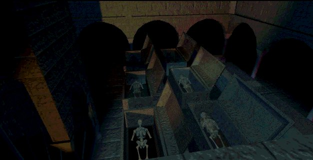

"Finding things a little cryptic?"
I bet you're glad that I didn't make you go through the maze, now did ya! Hehehe. This is where I live, here you can find a couple of fun fan bits. Just the pieces that I couldn't place anywhere else, but it would be a shame not to show them.
This is a little test to see if you are a the seventh guest addict. When all the lines
apply to you, you're an addict (and a bit of a looney, hehehe).
10. you stand in a hallway waiting for a woman in a white dress to appear.
9. you're waiting for the seventh guest to arrive through a window at your birthdayparty.
8. You yell at people "DON'T LOOK AT THAT PAINTING!".
7. you think Stauf's head is coming out your soup.
6. you don't want to look in a microscope, because it's too damn hard.
5. someone askes you something, you say "I remember...nothing."
4. you say "He was a drifter." everytime you open a book.
3. You're changing the positions of all the cans in the kitchen and then you say
"No, this isn't right."
2. you start humming a different tune when you enter another room.
1. you shout "COME BACK!" when somebody walks away.
Letters
Below are several email's. Interesting stuff from fans and the creators of the seventh guest.First up is the response from Robert Hirschboeck, the actor who played Henry Stauf, to this site.
My Dear Mr. Bones;
I have only now had the pleasure of exploring your site; quite nice, though
I am still victim to an arcane system (Mac Performa). It runs a Tad... slow
for me. Still, so very nice and so much to See!
My own site as you likely know is nolonger in service, but I do have a few
tidbits; eg. The old Electronic Entertainment article (Nov.1995) and the
older version written for a German Computer Mag that once adorned my site.
Perhaps you might like to include it in some future update.(note from Bones:
It can be found in the attic of the site) In anycase, it
is a pleasure to know there are fans still out there and interested; it's
gotten rather cold and moldy in these old ruins since the HOUSE burned
down... and oh so Looonnnneeelllllly! I'm hungry, mmmmmm... for good
company...a delicious guest or two for dinner, washed down with a good
chianti. (as compatriot Hannibal Lecter might put it.) In anycase, fear not
contacting me... but then please do not spread my address all over the web.
A few dinner guests are delightful, a multitude is for those who enjoy
loaves and fishes (burb!); and I've always been something of a recluse!
Sincerely
Rob Hirschboeck
"The Real Deal"
I answered his wonderful email and this is what I got back.
>Thank you so much for your kind and bone chilling email.I will post the
>article as soon as I finish up the next update to the digital mansion.
Ahhhh, My Dear Mr. Bones - (Paul)
A pleasure to meat... ah, meet you. Sometimes I'm a difficult old guy to dig
up, and cantankerous besides. I'm pleased you enjoyed my moldy old article,
and good to hear that there are writers out there carrying on the tradition;
keep those young juices flowing...
>I would like to ask if it's okay to forward a couple of questions to you?
I'd be glad to entertain forwarded questions and missives from guests; send
them on. I'll try to respond in a timely manner, though I can sometimes be
quite slovenly... papers, knickknacks, blood and dust everywhere, hard to
retain good help with such fear of the soup pot... tsk, tsk... Besides which
the Henry persona seems to be scattered at times in all sorts of cobwebby
corners and can take a while to reassemble. Still, being so lovingly
remembered increases my strength and brings me baaaaaaaackccckkkk!
mmmmmmmmmm for the good old days. "The rack was in fashion, the plague was
my passion, each day held a new joy in store...Was anybody Happy?!" ;-).
>I guess, that you still have a spell over us, since the house just doesn't
let us go.>
The spell yes; it's part of the BARGAIN. The HOUSE has us all.
Be Well.
RH. FAUST.
Isn't that the nicest madman you've ever met? A couple of days later he sent me a mail with a correspondence he had with another seventh guest fan called Branden. This is what they had to write.
Heya Rob!
Well, the sites were VERY interesting I must say. As a WebMaster student an
interesting navigation concept, but very good information. I didn't know
that a 3rd possible game was being looked at and concept art work existed for
it! That was amazing. With the advances in technology today, I would LOVE
to see the team reunite and continue work on a final chapter that would blow
the industry away as 7th did in its time. Make it amazing. Use the ever
expanding DVD platform so the game as a whole could exist on one DVD disc.
Hell, give the FatMan a 30 piece orchestra. Could you imagine a real
orchestrated score with a 30 piece orchestra playing that erie intro tune.
Video so crystal clear! HEY! We can dream. :-) Never say Never! Best
Wishes.
Branden
(reply from Robert)
Yup it would be fun to take another swing at it. I have real doubts about
getting the old team together, although as a mutual project (meaning I guess
that we would get away from the corporate hirarchical approach that
essentially screwed Trilobyte and convene as a group of artists interested
in really puting together a piece for love first and then for profit) The
folks I would trust to talk to about a real sequel would be Matt Costello
who wrote the first version, The FatMan George Sanger,
and Rob Landeros - mostly cause he's been through all the lessons a man
could go through with Tbyte, and underneath everything that went on is a good
artist. He and David Wheeler at Aftermath have been doing alot with DVD. If
they could approach a project equitably and perhaps permit imput from
other artists as to what is good
taste and good storytelling - as in get rid of the T&A; airbrush "Basic Instinct"
fantasy sexuality that pervaded 11H as well as TLC in favor of a good creepy story
that dealt with and was an extention of the questions posed by T7G but never
addressed or built upon in 11H. I question if another game format would
satisfy today's market so saturated in gun barrel games - But, If the story was
right and really engaged
the player - eg. dealt with some real substance like the problem of evil inside
the player... Well the games could get pretty personal. I'd love to see
Stauf set free again in the world of the Web. It's time that a new artform really
got generated by all this technical whoopla, but that is difficult when the
tech geeks are more envolved with what they can create than with challenging
what happens inside the mind of the "audience".
I believe that the most interactive part of any artwork is what goes on in
the imagination of the person addressing the artform; be that the reader or
the player. The trick is to set the "audience" free. Look what is
happening with the Harry Potter books; folks have discovered the thrills
their own imaginations can bring them again. All the characters,
associations, sets, emotions happen inside. It's hard to top a good read for
real interactivity! What is not given to you is always more interesting then
what is. Most of our current cultural entertainment is based on passivity.
Even good sex has to do with what is suggested in the mind, whereas if you
see it all from the get go, well, it's all pretty ludicrous really, compared
say with what Gypse Rose Lee could do with a single glove or a strategically
placed fan. You really don't want to see the Man behind the curtain; if you
do it just destroys the magic happening in your brain.
Art is what is induced in the mind, not handed out wholesale. What's that
old Frank Zappa song:
"What's the ugliest part of your body?
Some say your nose; some say your toes
I think it's your Mind..."
As "STAUF", that is really the question I wanted to get the player to
consider... Just what are you willing to give up your self your soul your
time and your creativity for? Yes, you the one sitting inside staring at a
computer screen all day, while there is sun and grass and baseball outside,
and making and doing real things in a real world. A toy isn't really any
good unless you can create your own reality around it using your own
imagination and creativity. Watch any 5 year old invent worlds with some
stuffed doll. The doll itself is just the vehical for the story the kid
makes up. Now how can you do that in this medium? That's the challenge.
Oops! a little off topic here, and in to tirade.
~ Getting Graeme on board again would take some doing and some monumental
fence mending.
...I do like the idea of a philharmonic FatMan though, and so I believe
would George.
Worth dreaming on...
Rob
Worth dreaming on indeed. But the facts are opponents in the quest for the third game. Here is Rob Landeros with some interesting information about the third game.
When I left Trilobyte, I sold off or traded in most of my stock in the
company. Trilobyte held the rights to T7G3. When they went belly up, all
that remains of Trilobyte is the name on a piece of paper which is owned by
Graeme. I and my agents have shopped the idea of T7G3 around to various
publishers over the last year, but there has been little to no interest.
Most of the time, they don't bother to explain why they turn it down, so it
is a mystery to me why they wouldn't jump on the idea.
I imagine Graeme has made some attempts at selling the rights also, but as
far as I am aware, he has not attracted a buyer yet. If I should ever get
an interested party, I would have my lawyer contact Graeme and see if a
licensing deal could be arranged. I've got two or three design ideas that I
could apply to the title.
Rob "Don Roberto" Landeros
http://www.aftermathmedia.com/
">>Always remember you're unique, just like everyone else."
But what about a movie? Stauf and the gang on the big screen? Rob Landeros gives the other of his two cents.
You are probably very accurate when you say it is highly unlikely that
7th Guest will ever be made into a movie. However, stranger things
have happened. Sometimes, with the passage of time, old cult classics are
dredged up and find a new audience to go along with the nostalgic original fans.
Having seen The Haunting recently, I cannot but think that a movie version of
the 7th Guest would have to be better than that piece of crap. Feel free to talk
it up if you like.
Don Roberto
So the chance that we will see something new about the house is as big as a stampcollection of an ant. Instead, let's focus
our thoughts on the people who made the classics. Here is The Fat Man with a reply. I asked him why his Fan mail manager
is a 13 year old boy (Brian Larsen). This is what Fat had to say.
Since I was in grade school, my family has called me the Patron Saint of
the Nerds!
I sometimes find that I like to give people a lot of rope, even if it means
risking something myself. It seems like the right thing to do.
Once, a kid called me up and wanted to see my studio. I agreed, and then I
even had to pick him up at the bus stop. He had a job at a nearby hotel.
Why did I agree to meet with him? Why did I give him a job composing a few
tunes for Nintendo? I dunno. He seemed kind of distracted, like Elvis
watching TV. But I was busy and he was in the right place at the right
time. He was pretty good at the Nintendo stuff.
When I was asked to do Wing Commander, I was too busy, so I contracted him
to do the battle music and the theme. Little did I know that he had had a
space movie theme in his head since High School. Dave Govett's theme to
Wing Commander revolutionized the industry. He was the first member of
Team Fat, and we worked happily together for 8 years.
I recently drove him and his friends to their Millenium party in my rolls
(Perhaps this would be a good story..."How I Spent my Last Day on Earth").
I was happy to serve a guy who was so good to me for so long.
Pardon the Evil Slang, but I said, "Dave, you was my nigger* for 8 years.
I'se _proud_ to be _yo'_ nigger tonight!"
*He wasn't. We were partners.
Well, that's it. Now, wasn't that fun? Poking around in other people's mail!Hehehe, now please leave the crypt so I can have my beautysleep, tah!